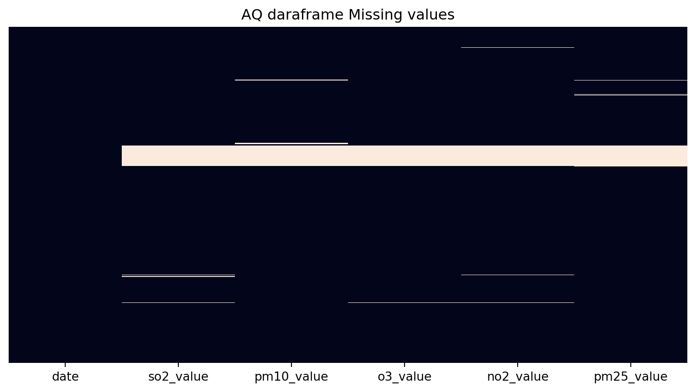
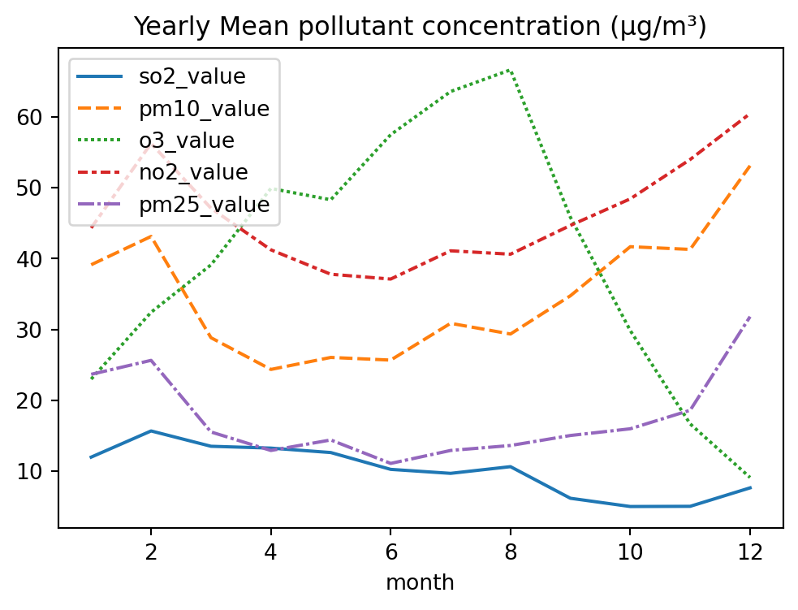
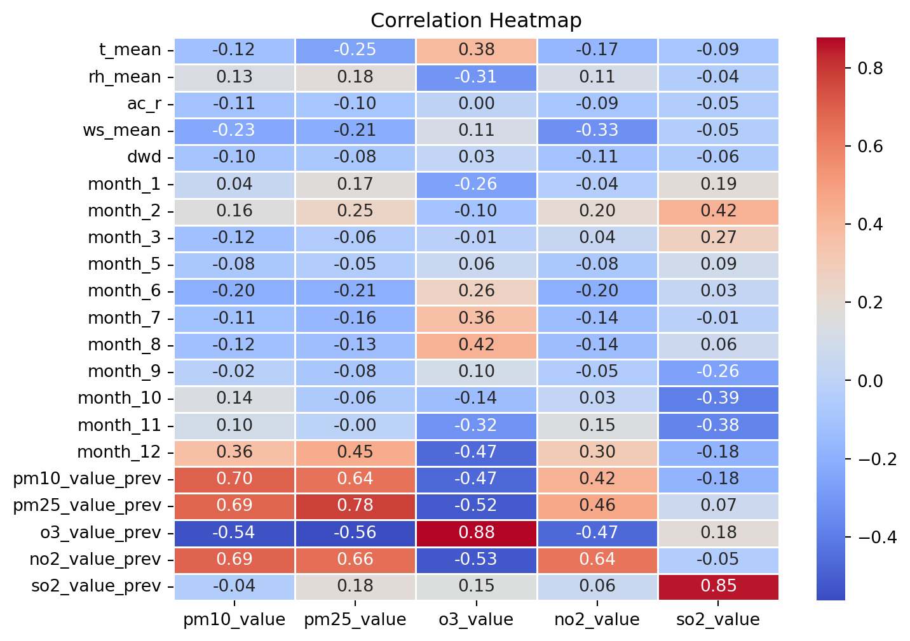
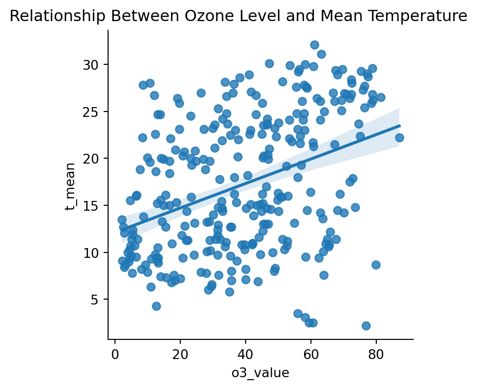
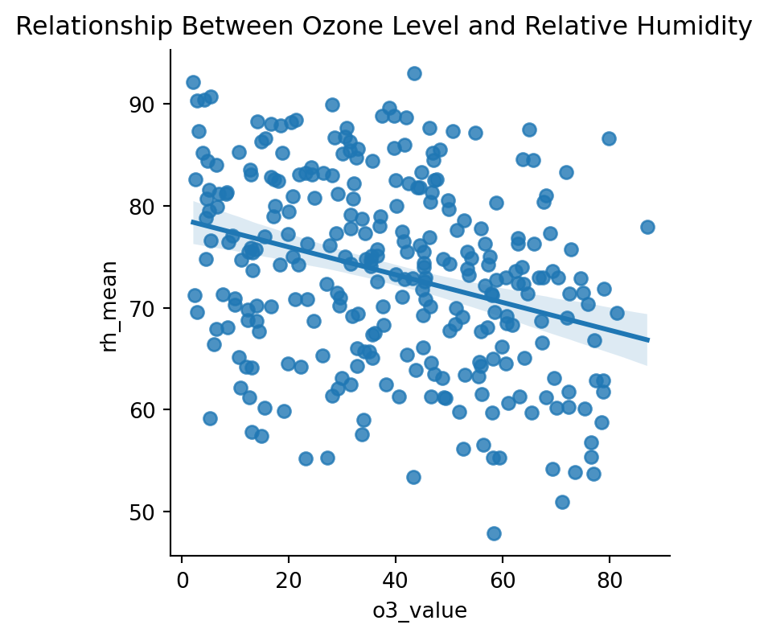
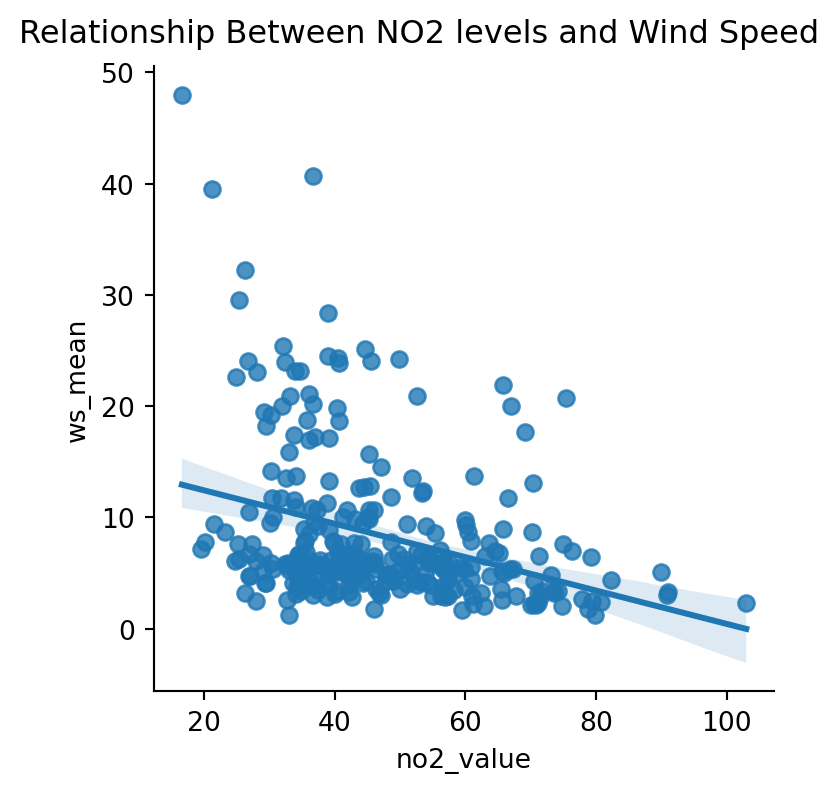
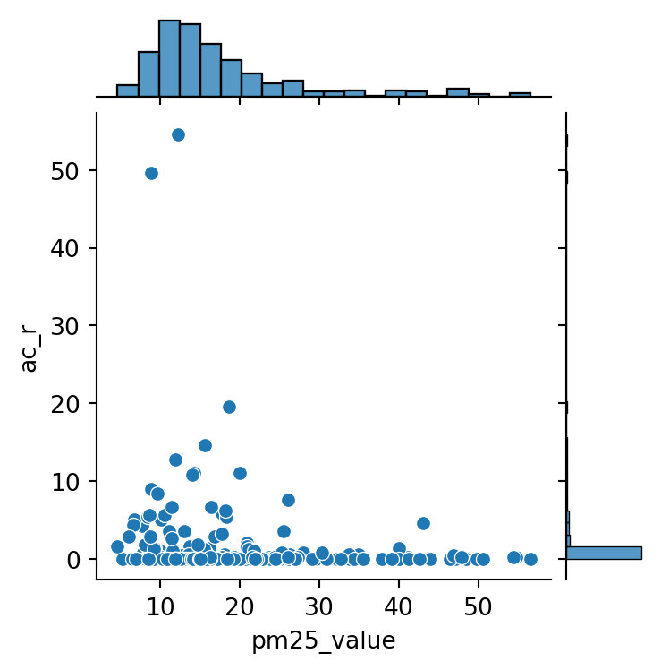

import pandas as pd
import numpy as np
import re
import matplotlib.pyplot as plt
import seaborn as sns
import janitor
import glob
from functools import reduce
from sklearn.model_selection import train_test_split
from sklearn.linear_model import LinearRegression
from sklearn.ensemble import RandomForestRegressor
from sklearn.metrics import mean_absolute_error, mean_squared_error, r2_score, root_mean_squared_error
import statsmodels.api as sm
from statsmodels.stats.outliers_influence import variance_inflation_factor
# to provide lightweight pipelining in Python
import joblib
%matplotlib inlineAir Quality Regression Analysis
Imports
Let’s start by importing the libraries we are going to use:
And now let’s import our weather data:
data_raw_weather = pd.read_csv(
"../data/historic_data/thessaloniki-meteo-2023.csv",
header=0
)
data_raw_weather.tail()| Date | T_mean | T_max | T_min | RH_mean | RH_max | RH_min | Prs_mean | Prs_max | Prs_min | Ac_R | WS_mean | DWD | WG | |
|---|---|---|---|---|---|---|---|---|---|---|---|---|---|---|
| 360 | 27/12/23 | 11.4 | 16.6 | 7.9 | 81.2 | 94 | 67 | 1022.7 | 1027.0 | 1019.4 | 0.0 | 6.8 | W | 27.4 |
| 361 | 28/12/23 | 10.0 | 14.6 | 6.7 | 85.2 | 90 | 75 | 1026.4 | 1028.9 | 1023.5 | 0.0 | 1.8 | SSW | 8.0 |
| 362 | 29/12/23 | 9.0 | 12.9 | 6.3 | 90.4 | 95 | 78 | 1021.3 | 1023.5 | 1019.7 | 0.4 | 2.0 | E | 12.9 |
| 363 | 30/12/23 | 8.4 | 12.4 | 5.6 | 90.3 | 96 | 76 | 1019.8 | 1021.4 | 1018.7 | 0.2 | 2.0 | ESE | 11.3 |
| 364 | 31/12/23 | 9.5 | 12.4 | 7.1 | 84.0 | 92 | 70 | 1019.4 | 1021.0 | 1018.2 | 0.2 | 1.7 | SW | 9.7 |
and AQ data:
# Read and clean each pollutant
def clean_raw_aq_data(filepath):
df = pd.read_json(filepath, lines=True)
# Extract pollutant name from the parent directory name
pollutant = filepath.split('/')[-2].lower() # Get parent directory name
# Rename 'Value' column
df = df.rename(columns={'Value': f"{pollutant}_value"})
df = df.clean_names()
return df[["start", f"{pollutant}_value"]]
# Get all JSON files across pollutant subfolders
filepaths = glob.glob("../data/historic_data/*/*.json")
for fp in filepaths:
match = re.search(r'/([A-Za-z0-9]+?)/', fp)
if match:
pollutant = match.group(1).lower()
print(f"{fp} -> {pollutant}")
# Clean each one
# Each element of the list is a pandas DataFrame
dfs = [clean_raw_aq_data(fp) for fp in filepaths]
# reduce() applies a function cumulatively to an iterable, reduce(function, iterable)
merged_df_aq = reduce(
# function
lambda left, right: pd.merge(left, right, on="start", how="inner"),
# iterable
dfs
)
merged_df_aq.head()../data/historic_data/SO2/GR0018A-SO2-2023_24.json -> data
../data/historic_data/PM10/GR0018A-PM10-2017_24.json -> data
../data/historic_data/O3/GR0018A-O3-2023_24.json -> data
../data/historic_data/NO2/GR0018A-NO2-2023_24.json -> data
../data/historic_data/PM25/GR0018A-PM25-2017_24.json.json -> data| start | so2_value | pm10_value | o3_value | no2_value | pm25_value | |
|---|---|---|---|---|---|---|
| 0 | 2023-01-01 00:00:00.000000000 | 10 | 121 | 3 | 52 | 83 |
| 1 | 2023-01-01 01:00:00.000000000 | 10 | 97 | 3 | 48 | 71 |
| 2 | 2023-01-01 02:00:00.000000000 | 10 | 97 | 3 | 49 | 77 |
| 3 | 2023-01-01 03:00:00.000000000 | 9 | 86 | 3 | 46 | 63 |
| 4 | 2023-01-01 04:00:00.000000000 | 10 | 78 | 3 | 41 | 54 |
Data Cleaning
Column fixing
Weather dataframe
I’ll start by dropping the columns I don’t need and standarizing column names:
data_raw_weather = data_raw_weather.drop([
'T_max', 'T_min', 'RH_max',
'RH_min', 'Prs_mean', 'Prs_max', 'Prs_min', 'WG'
], axis=1)
data_raw_weather = data_raw_weather.clean_names(remove_special=True)AQ Dataframe
merged_df_aq.info()
# Convert 'Start' from milliseconds to datetime and format as 'dd/mm/yy'
merged_df_aq['start'] = pd.to_datetime(merged_df_aq['start'])
merged_df_aq = merged_df_aq.rename(columns={'start': 'date'})
# Keep only rows where year is 2023, as this is the span that the weather file covers, too
merged_df_aq = merged_df_aq[merged_df_aq['date'].dt.year == 2023]
merged_df_aq.head()<class 'pandas.core.frame.DataFrame'>
RangeIndex: 17544 entries, 0 to 17543
Data columns (total 6 columns):
# Column Non-Null Count Dtype
--- ------ -------------- -----
0 start 17544 non-null object
1 so2_value 17544 non-null int64
2 pm10_value 17544 non-null int64
3 o3_value 17544 non-null int64
4 no2_value 17544 non-null int64
5 pm25_value 17544 non-null int64
dtypes: int64(5), object(1)
memory usage: 822.5+ KB| date | so2_value | pm10_value | o3_value | no2_value | pm25_value | |
|---|---|---|---|---|---|---|
| 0 | 2023-01-01 00:00:00 | 10 | 121 | 3 | 52 | 83 |
| 1 | 2023-01-01 01:00:00 | 10 | 97 | 3 | 48 | 71 |
| 2 | 2023-01-01 02:00:00 | 10 | 97 | 3 | 49 | 77 |
| 3 | 2023-01-01 03:00:00 | 9 | 86 | 3 | 46 | 63 |
| 4 | 2023-01-01 04:00:00 | 10 | 78 | 3 | 41 | 54 |
Missing Values
Weather dataframe
Let’s check the number of na values:
# Calculate missing values
missing_values_weather = data_raw_weather.isnull().sum()
print(f"""Missing values per column in Weather dataset:
{missing_values_weather}""")Missing values per column in Weather dataset:
date 0
t_mean 0
rh_mean 0
ac_r 0
ws_mean 0
dwd 0
dtype: int64AQ Dataframe
Glancing through the data, I noticed that there are ‘value’ data points marked as ‘-9999’, meaning they are null. I’ll keep them for the time being, so that joining the tables on hours will still work, and remove them once the join has been done.
# Replace -9999 with NaN for visualization
aq_missing = merged_df_aq.copy()
aq_missing = aq_missing.replace(-9999, np.nan)
missing_values_aq = aq_missing.isnull().sum()
# Heatmap of missing values
fig, ax = plt.subplots(figsize=(10, 5))
sns.heatmap(aq_missing.isnull(), cbar=False, yticklabels=False)
plt.title("ΑQ daraframe Missing values")
plt.show()
# data_clean_aq = data_raw_aq.dropna()
# print(f"""Missing values per column in cleaned Weather dataset:
# {missing_values_aq}""")
Fixing Data Types & Transformations
Weather dataframe
Let’s check the data types of the columns:
data_raw_weather.info()
# print("Wind direction (dwd) column values:")
# print(data_raw_weather['dwd'].unique())<class 'pandas.core.frame.DataFrame'>
RangeIndex: 365 entries, 0 to 364
Data columns (total 6 columns):
# Column Non-Null Count Dtype
--- ------ -------------- -----
0 date 365 non-null object
1 t_mean 365 non-null float64
2 rh_mean 365 non-null float64
3 ac_r 365 non-null float64
4 ws_mean 365 non-null float64
5 dwd 365 non-null object
dtypes: float64(4), object(2)
memory usage: 17.2+ KBI therefore need to: * Convert date from object to datetime type * Assign wind directions to a number, as this is how they are given in the weather predictions of Open Meteo.
# wind direction string to float
directions = ['SE', 'E', 'NNW', 'W', 'ESE', 'NW', 'N', 'SSW', 'ENE', 'WNW', 'WSW', 'SW', 'S']
wind_dir_count_dict = {key: 0 for key in directions}
# print(wind_dir_count_dict)
for i, row in data_raw_weather.iterrows():
s = row['dwd']
if s in directions:
wind_dir_count_dict[s]+=1
# print(wind_dir_count_dict)
# Mapping of compass points to degrees
direction_to_deg = {
'N': 0,
'NNE': 22.5,
'NE': 45,
'ENE': 67.5,
'E': 90,
'ESE': 112.5,
'SE': 135,
'SSE': 157.5,
'S': 180,
'SSW': 202.5,
'SW': 225,
'WSW': 247.5,
'W': 270,
'WNW': 292.5,
'NW': 315,
'NNW': 337.5
}
# res = {f"{k}{ele}": ele for ele in a}
# print(res)
# Convert list to degrees
data_raw_weather['dwd'] = [direction_to_deg[wind_dir] for wind_dir in data_raw_weather['dwd']]
# convert date column from object to datetime
data_raw_weather['date'] = pd.to_datetime(data_raw_weather['date'])
data_raw_weather.info()<class 'pandas.core.frame.DataFrame'>
RangeIndex: 365 entries, 0 to 364
Data columns (total 6 columns):
# Column Non-Null Count Dtype
--- ------ -------------- -----
0 date 365 non-null datetime64[ns]
1 t_mean 365 non-null float64
2 rh_mean 365 non-null float64
3 ac_r 365 non-null float64
4 ws_mean 365 non-null float64
5 dwd 365 non-null float64
dtypes: datetime64[ns](1), float64(5)
memory usage: 17.2 KB/var/folders/6b/f7ny0f697v9_3ymryd5sqsmr0000gn/T/ipykernel_4825/1110300197.py:40: UserWarning:
Could not infer format, so each element will be parsed individually, falling back to `dateutil`. To ensure parsing is consistent and as-expected, please specify a format.
Let’s check the final result:
data_raw_weather.head()
# data_raw_weather.describe()| date | t_mean | rh_mean | ac_r | ws_mean | dwd | |
|---|---|---|---|---|---|---|
| 0 | 2023-01-01 | 9.4 | 88.0 | 0.4 | 1.9 | 135.0 |
| 1 | 2023-02-01 | 9.1 | 88.8 | 0.2 | 1.8 | 135.0 |
| 2 | 2023-03-01 | 8.9 | 87.7 | 0.2 | 1.6 | 135.0 |
| 3 | 2023-04-01 | 10.3 | 85.7 | 0.0 | 3.9 | 135.0 |
| 4 | 2023-05-01 | 10.1 | 84.6 | 0.2 | 3.2 | 90.0 |
AQ dataframe
Let’s check the data types of the columns:
merged_df_aq.info()<class 'pandas.core.frame.DataFrame'>
Index: 8760 entries, 0 to 8759
Data columns (total 6 columns):
# Column Non-Null Count Dtype
--- ------ -------------- -----
0 date 8760 non-null datetime64[ns]
1 so2_value 8760 non-null int64
2 pm10_value 8760 non-null int64
3 o3_value 8760 non-null int64
4 no2_value 8760 non-null int64
5 pm25_value 8760 non-null int64
dtypes: datetime64[ns](1), int64(5)
memory usage: 479.1 KBConvert hourly means to daily means
As the weather dataset is given in daily averages, I’ll transform the AQ values to daily, too:
# Group every 24 rows (from hourly to daily average)
def safe_mean(group):
# If any hourly values are flagged as -9999, mark the whole daily mean NaN
if (group == -9999).any().any(): # check all columns
return pd.Series(np.nan, index=group.columns)
return group.mean()
# Select only pollutant columns (exclude 'start')
pollutant_cols = merged_df_aq.columns.drop('date')
# Compute daily averages using integer division on index (24-hour chunks)
daily_avg = (
merged_df_aq[pollutant_cols]
.groupby(merged_df_aq.index // 24)
.apply(safe_mean)
.reset_index(drop=True)
)
# Get daily dates from 'start' column
daily_dates = merged_df_aq.groupby(merged_df_aq.index // 24)['date'].first().reset_index(drop=True)
# Combine into a single DataFrame
merged_df_aq = pd.concat([daily_dates, daily_avg], axis=1)
merged_df_aq.head()| date | so2_value | pm10_value | o3_value | no2_value | pm25_value | |
|---|---|---|---|---|---|---|
| 0 | 2023-01-01 | 10.875000 | 77.916667 | 6.833333 | 60.208333 | 54.916667 |
| 1 | 2023-01-02 | 11.000000 | 74.500000 | 5.291667 | 66.958333 | 48.541667 |
| 2 | 2023-01-03 | 12.250000 | 90.458333 | 5.333333 | 74.208333 | 56.458333 |
| 3 | 2023-01-04 | 12.958333 | 72.625000 | 6.500000 | 65.750000 | 48.416667 |
| 4 | 2023-01-05 | 13.291667 | 67.916667 | 6.583333 | 60.875000 | 41.125000 |
Seasonal fluctuation
We know from literature that seasonal changes drive air quality fluctuations through changes in human activities, such as heating (emissions), altered atmospheric conditions (meteorology), and variations in chemical reaction rates. I’ll therefore add month as a predictor, noting that that might increase multicollinearity - so I’ll check for that later on:
# create a new 'month' column
merged_df_aq['month'] = pd.to_datetime(merged_df_aq['date']).dt.month
# and let's visualize the outcome
df_groupby = merged_df_aq.groupby(['month']).mean()
plt.figure(figsize=(6,4))
sns.lineplot(data=df_groupby.drop(columns=['date']))
plt.title('Yearly Mean pollutant concentration (µg/m³)')
plt.show()
It’s interesting to note how ozone rises in the summer (when less rain falls) while SO2, PM10 and PM2.5 drop. We should however investigate (later on) which part of these fluctuations is explained by meteorological effects only, and which by patterns in transportation, use of fossil fuels etc. As a final step, we need to treat the month column as categorical, as in its current form given in 1–12 numbers, it’s understood as ordinal. We’ll use the one-hot encoding pandas function for this:
# get the dummy values
month_dummies = pd.get_dummies(merged_df_aq['month'], prefix='month', dtype=int)
# join the dummies to the aq dataset
merged_df_aq = pd.concat([merged_df_aq, month_dummies], axis=1)
merged_df_aq.head()| date | so2_value | pm10_value | o3_value | no2_value | pm25_value | month | month_1 | month_2 | month_3 | month_4 | month_5 | month_6 | month_7 | month_8 | month_9 | month_10 | month_11 | month_12 | |
|---|---|---|---|---|---|---|---|---|---|---|---|---|---|---|---|---|---|---|---|
| 0 | 2023-01-01 | 10.875000 | 77.916667 | 6.833333 | 60.208333 | 54.916667 | 1 | 1 | 0 | 0 | 0 | 0 | 0 | 0 | 0 | 0 | 0 | 0 | 0 |
| 1 | 2023-01-02 | 11.000000 | 74.500000 | 5.291667 | 66.958333 | 48.541667 | 1 | 1 | 0 | 0 | 0 | 0 | 0 | 0 | 0 | 0 | 0 | 0 | 0 |
| 2 | 2023-01-03 | 12.250000 | 90.458333 | 5.333333 | 74.208333 | 56.458333 | 1 | 1 | 0 | 0 | 0 | 0 | 0 | 0 | 0 | 0 | 0 | 0 | 0 |
| 3 | 2023-01-04 | 12.958333 | 72.625000 | 6.500000 | 65.750000 | 48.416667 | 1 | 1 | 0 | 0 | 0 | 0 | 0 | 0 | 0 | 0 | 0 | 0 | 0 |
| 4 | 2023-01-05 | 13.291667 | 67.916667 | 6.583333 | 60.875000 | 41.125000 | 1 | 1 | 0 | 0 | 0 | 0 | 0 | 0 | 0 | 0 | 0 | 0 | 0 |
Temporal autocorrelation
Temporal autocorrelation means that values in a time series are correlated with their own past values. According to literature, it’s a core property of time-series data, and critical for forecasting models. In our case, I’ll factor it in by creating a new column for each of the dependent variables (i.e. the pollutants) which will store the daily mean of the previous day, for that pollutant.
# List of target pollutants
pollutants = ['pm10_value', 'pm25_value', 'o3_value', 'no2_value', 'so2_value']
# Shift pollutant columns
for p in pollutants:
# create a new column, with the _prev suffix added
merged_df_aq[f'{p}_prev'] = merged_df_aq[p].shift(1)
merged_df_aq.head()| date | so2_value | pm10_value | o3_value | no2_value | pm25_value | month | month_1 | month_2 | month_3 | ... | month_8 | month_9 | month_10 | month_11 | month_12 | pm10_value_prev | pm25_value_prev | o3_value_prev | no2_value_prev | so2_value_prev | |
|---|---|---|---|---|---|---|---|---|---|---|---|---|---|---|---|---|---|---|---|---|---|
| 0 | 2023-01-01 | 10.875000 | 77.916667 | 6.833333 | 60.208333 | 54.916667 | 1 | 1 | 0 | 0 | ... | 0 | 0 | 0 | 0 | 0 | NaN | NaN | NaN | NaN | NaN |
| 1 | 2023-01-02 | 11.000000 | 74.500000 | 5.291667 | 66.958333 | 48.541667 | 1 | 1 | 0 | 0 | ... | 0 | 0 | 0 | 0 | 0 | 77.916667 | 54.916667 | 6.833333 | 60.208333 | 10.875000 |
| 2 | 2023-01-03 | 12.250000 | 90.458333 | 5.333333 | 74.208333 | 56.458333 | 1 | 1 | 0 | 0 | ... | 0 | 0 | 0 | 0 | 0 | 74.500000 | 48.541667 | 5.291667 | 66.958333 | 11.000000 |
| 3 | 2023-01-04 | 12.958333 | 72.625000 | 6.500000 | 65.750000 | 48.416667 | 1 | 1 | 0 | 0 | ... | 0 | 0 | 0 | 0 | 0 | 90.458333 | 56.458333 | 5.333333 | 74.208333 | 12.250000 |
| 4 | 2023-01-05 | 13.291667 | 67.916667 | 6.583333 | 60.875000 | 41.125000 | 1 | 1 | 0 | 0 | ... | 0 | 0 | 0 | 0 | 0 | 72.625000 | 48.416667 | 6.500000 | 65.750000 | 12.958333 |
5 rows × 24 columns
I can now include pm10_value_prev, pm25_value_prev etc. in the predictor list along with weather and month features, in the correlation analysis that follows.
Joining Tables
merged_df = pd.merge(data_raw_weather, merged_df_aq, on='date', how='inner')
# sort by date to keep data in chronological order
merged_df = merged_df.sort_values('date').reset_index(drop=True)
merged_df.head()| date | t_mean | rh_mean | ac_r | ws_mean | dwd | so2_value | pm10_value | o3_value | no2_value | ... | month_8 | month_9 | month_10 | month_11 | month_12 | pm10_value_prev | pm25_value_prev | o3_value_prev | no2_value_prev | so2_value_prev | |
|---|---|---|---|---|---|---|---|---|---|---|---|---|---|---|---|---|---|---|---|---|---|
| 0 | 2023-01-01 | 9.4 | 88.0 | 0.4 | 1.9 | 135.0 | 10.875000 | 77.916667 | 6.833333 | 60.208333 | ... | 0 | 0 | 0 | 0 | 0 | NaN | NaN | NaN | NaN | NaN |
| 1 | 2023-01-02 | 7.8 | 59.2 | 0.0 | 20.0 | 337.5 | 11.000000 | 74.500000 | 5.291667 | 66.958333 | ... | 0 | 0 | 0 | 0 | 0 | 77.916667 | 54.916667 | 6.833333 | 60.208333 | 10.875000 |
| 2 | 2023-01-03 | 11.9 | 90.7 | 0.0 | 3.4 | 202.5 | 12.250000 | 90.458333 | 5.333333 | 74.208333 | ... | 0 | 0 | 0 | 0 | 0 | 74.500000 | 48.541667 | 5.291667 | 66.958333 | 11.000000 |
| 3 | 2023-01-04 | 16.0 | 67.9 | 0.0 | 9.0 | 135.0 | 12.958333 | 72.625000 | 6.500000 | 65.750000 | ... | 0 | 0 | 0 | 0 | 0 | 90.458333 | 56.458333 | 5.333333 | 74.208333 | 12.250000 |
| 4 | 2023-01-05 | 16.1 | 79.9 | 0.2 | 5.5 | 202.5 | 13.291667 | 67.916667 | 6.583333 | 60.875000 | ... | 0 | 0 | 0 | 0 | 0 | 72.625000 | 48.416667 | 6.500000 | 65.750000 | 12.958333 |
5 rows × 29 columns
And we can now remove na values:
df_clean = merged_df.dropna()
# missing_values_aq = df_clean.isnull().sum()
# print(f"""Missing values per column in cleaned dataset:
# {missing_values_aq}""")
df_clean.info()<class 'pandas.core.frame.DataFrame'>
Index: 291 entries, 1 to 364
Data columns (total 29 columns):
# Column Non-Null Count Dtype
--- ------ -------------- -----
0 date 291 non-null datetime64[ns]
1 t_mean 291 non-null float64
2 rh_mean 291 non-null float64
3 ac_r 291 non-null float64
4 ws_mean 291 non-null float64
5 dwd 291 non-null float64
6 so2_value 291 non-null float64
7 pm10_value 291 non-null float64
8 o3_value 291 non-null float64
9 no2_value 291 non-null float64
10 pm25_value 291 non-null float64
11 month 291 non-null int32
12 month_1 291 non-null int64
13 month_2 291 non-null int64
14 month_3 291 non-null int64
15 month_4 291 non-null int64
16 month_5 291 non-null int64
17 month_6 291 non-null int64
18 month_7 291 non-null int64
19 month_8 291 non-null int64
20 month_9 291 non-null int64
21 month_10 291 non-null int64
22 month_11 291 non-null int64
23 month_12 291 non-null int64
24 pm10_value_prev 291 non-null float64
25 pm25_value_prev 291 non-null float64
26 o3_value_prev 291 non-null float64
27 no2_value_prev 291 non-null float64
28 so2_value_prev 291 non-null float64
dtypes: datetime64[ns](1), float64(15), int32(1), int64(12)
memory usage: 67.1 KBData Exploration
Relationships between parameters (Bivariate Analysis)
I’ll start by distinguishing between predictors and outcomes:
# Weather predictors
predictors_weather = ['t_mean', 'rh_mean', 'ac_r', 'ws_mean', 'dwd']
# Month one-hot columns
month_cols = [col for col in df_clean.columns if col.startswith('month_')]
# I'll drop a month to avoid multicollinearity between months, i.e. the so-called dummy variable trap
month_cols.remove('month_4')
# Previous day pollutant columns
prev_pollutant_cols = [col for col in df_clean.columns if col.endswith('_prev')]
# Combine into final predictors list
predictors = predictors_weather + month_cols + prev_pollutant_cols
# Targets (i.e. the dependent variables)
targets = ['pm10_value', 'pm25_value', 'o3_value', 'no2_value', 'so2_value']corr = df_clean[predictors + targets].corr(method='pearson')
# Extract correlation between predictors and targets
corr_subset = corr.loc[predictors, targets]
plt.figure(figsize=(8,6))
sns.heatmap(corr_subset, annot=True, cmap="coolwarm", fmt=".2f", linewidths=0.5)
plt.title("Correlation Heatmap")
plt.show()
Multicollinearity
We should now chech the predictors for multicollinearity, as when predictors are highly correlated with each other (e.g., t_mean and month_7, or pm10_value_prev and pm25_value_prev), it can distort coefficient estimates in linear models (like regression) and inflate variance, making model interpretation unreliable.
# Select predictors only
X = df_clean[predictors].astype(float)
# Compute VIF for each column
vif_data = pd.DataFrame()
vif_data["feature"] = X.columns
vif_data["VIF"] = [variance_inflation_factor(X.values, i) for i in range(X.shape[1])]
print(vif_data.sort_values("VIF", ascending=False)) feature VIF
16 pm10_value_prev 58.088740
1 rh_mean 50.809686
17 pm25_value_prev 45.282581
19 no2_value_prev 37.364852
20 so2_value_prev 25.739605
18 o3_value_prev 20.594904
4 dwd 9.560670
0 t_mean 9.467665
3 ws_mean 4.543931
13 month_10 3.661882
15 month_12 3.560613
14 month_11 3.464876
11 month_8 2.960087
12 month_9 2.710829
10 month_7 2.678104
5 month_1 2.498600
9 month_6 2.242023
6 month_2 2.106010
7 month_3 1.891489
2 ac_r 1.346969
8 month_5 1.239074As a rule of thumb, we assess VIF values as follows:
- VIF < 5 → no issue
- 5 ≤ VIF < 10 → moderate multicollinearity
- VIF ≥ 10 → strong multicollinearity (consider action)
For our case, we have:
- pm10: Extremely high VIF at 58, i.e. it’s almost perfectly explained by other predictors.
- rh_mean: Similarly strong multicollinearity of 50 with other variables (likely temp and month).
- pm25_value_prev, no2_value_prev, so2_value_prev and o3_value_prev fall between 20–45: previous-day pollutants are strongly intercorrelated.
- Wind direction (dwd) and mean temperature (t_mean) have a VIF of 9, which is borderline.
Since I am planning to build a Random Forest model, which is non-linear, multicollinearity is not a serious concern; the reason is that it doesn’t rely on vector algebra for optimization, but on rule-based splits (e.g. the tree might pick one for a split and ignore the other), so the effects of individual predictors don’t overlap.
Predictions Model
As - according to literature - meteorological and pollutant data are generally non-linear and complex, I will initially consider a Random Forest model, as it might be better suited for capturing their interactions.
model = RandomForestRegressor(n_estimators=200, random_state=42)Training and Testing data
Now that we’ve explored the data a bit, we’ll go ahead and split the data into training and testing sets.
X = df_clean[predictors]
y = df_clean[targets]
X_train, X_test, y_train, y_test = train_test_split(
X, y, test_size=0.3, random_state=25
)Training the Model
rf_model = RandomForestRegressor(
n_estimators=300,
max_depth=None,
random_state=25,
n_jobs=-1
)
rf_model.fit(X_train, y_train)RandomForestRegressor(n_estimators=300, n_jobs=-1, random_state=25)In a Jupyter environment, please rerun this cell to show the HTML representation or trust the notebook.
On GitHub, the HTML representation is unable to render, please try loading this page with nbviewer.org.
Parameters
| n_estimators | 300 | |
| criterion | 'squared_error' | |
| max_depth | None | |
| min_samples_split | 2 | |
| min_samples_leaf | 1 | |
| min_weight_fraction_leaf | 0.0 | |
| max_features | 1.0 | |
| max_leaf_nodes | None | |
| min_impurity_decrease | 0.0 | |
| bootstrap | True | |
| oob_score | False | |
| n_jobs | -1 | |
| random_state | 25 | |
| verbose | 0 | |
| warm_start | False | |
| ccp_alpha | 0.0 | |
| max_samples | None | |
| monotonic_cst | None |
Evaluating the Model
I’ll get the predictions first:
y_pred = rf_model.predict(X_test)
y_pred = pd.DataFrame(y_pred, columns=targets)
# print(y_pred)And now I’ll estimate: - The coefficient of Determination R^2: Measures the proportion of the variance in the dependent variable that is predictable from the independent variables.
- The Root Mean Squared Error (RMSE), which measures the average magnitude of the errors.
# empty list to store my results
results = []
# Evaluate each pollutant separately
for i, pollutant in enumerate(targets):
y_true = y_test[pollutant].values
y_hat = y_pred[pollutant].values
r2 = r2_score(y_true, y_hat)
rmse = root_mean_squared_error(y_true, y_hat)
results.append({'pollutant': pollutant, 'R2': r2, 'RMSE': rmse})
print(f"{pollutant}: R² = {r2:.3f}, RMSE = {rmse:.2f}")
# save results to a df in order to export later on
df_metrics = pd.DataFrame(results)pm10_value: R² = 0.494, RMSE = 11.74
pm25_value: R² = 0.589, RMSE = 6.91
o3_value: R² = 0.738, RMSE = 11.00
no2_value: R² = 0.422, RMSE = 11.87
so2_value: R² = 0.644, RMSE = 2.27| Pollutant | R² | RMSE | Interpretation |
|---|---|---|---|
| PM10 | 0.49 | 11.74 | The model explains ~49% of variance, which is a moderate result. An explanation could be that PM10 coarse particles include many locally-generated sources (e.g. road dust, construction) which are difficult to capture |
| PM2.5 | 0.59 | 6.91 | Good performance. A higher R^2 and lower RMSE than PM10 could be due to the fact that PM2.5 is more heavily influenced by regional transport and secondary formation (rather than e.g. primary pollutants, that are released directly from a source like car exhausts). |
| O₃ | 0.74 | 11.00 | High performance of the model: ozone depends heavily on temperature and sunlight, so the model is doing well. |
| NO₂ | 0.42 | 11.87 | Moderate result: Nitrogen dioxide varies a lot with traffic and emissions (direct-emission pollutant, hence more difficult to predict). |
| SO₂ | 0.64 | 2.27 | Good performance: this could be explained by the (permanent) industrial complexes on the west side of the city. |
Save the Random Forest model and chart tables
# Save the trained Random Forest
joblib.dump(rf_model, "random_forest_air_quality.pkl")
# Save the list of feature columns used for training
joblib.dump(predictors, "rf_feature_columns.pkl")
# monthly averages table
df_groupby.to_csv("../data/forecasts/monthly_mean_pollutants.csv", index=True)
# correlation subset
corr_subset.to_csv("../data/forecasts/correlation_matrix.csv")
# evaluation metrics
df_metrics.to_csv("../data/forecasts/model_metrics.csv", index=False)
Comments
Temporal autocorrelation The strongest correlations in the entire heatmap are between a pollutant’s current value and its previous day’s value (O3: 0.88, SO2: 0.85, PM2.5: 0.78, PM10: 0.70). This could be due permanent emission sources (e.g. industrial complex on the west side of the city).
Meteorological Factors
Let’s investigate into more detail the highest correlations found, starting with temperature and ozone:



I can see some outliers in the rainfall predictor, so let’s look into it a bit further:

Although some outliers are detected in the rainfall variable, rainfall overall shows only weak correlations with the air quality outcomes. Therefore, these outliers will be retained to avoid unnecessary data loss.